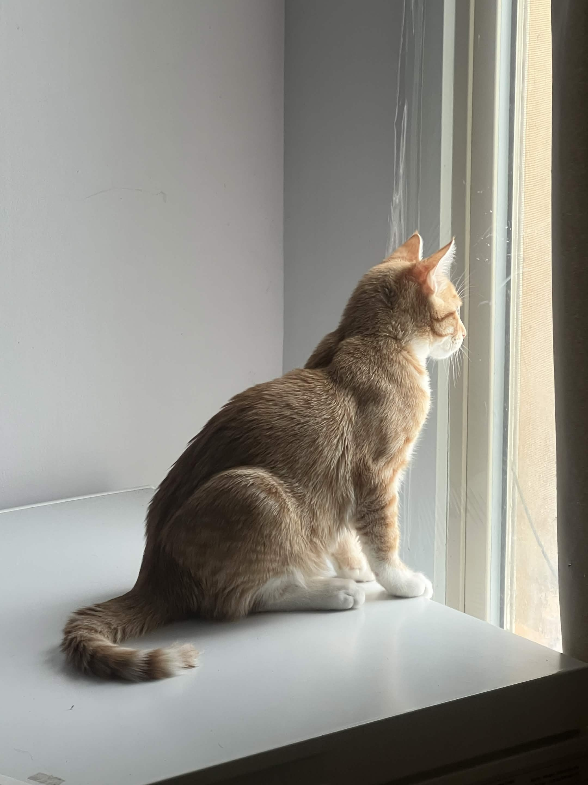
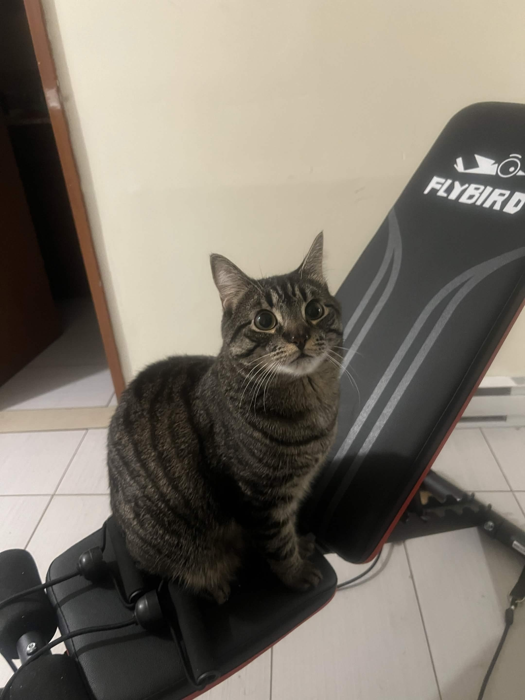
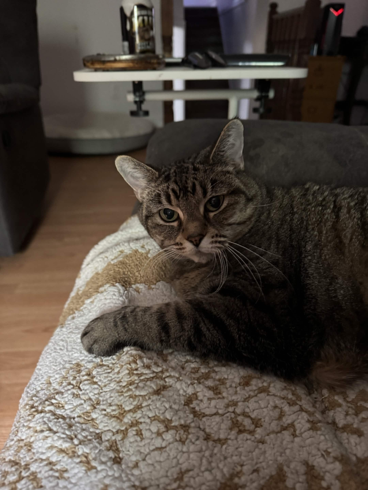
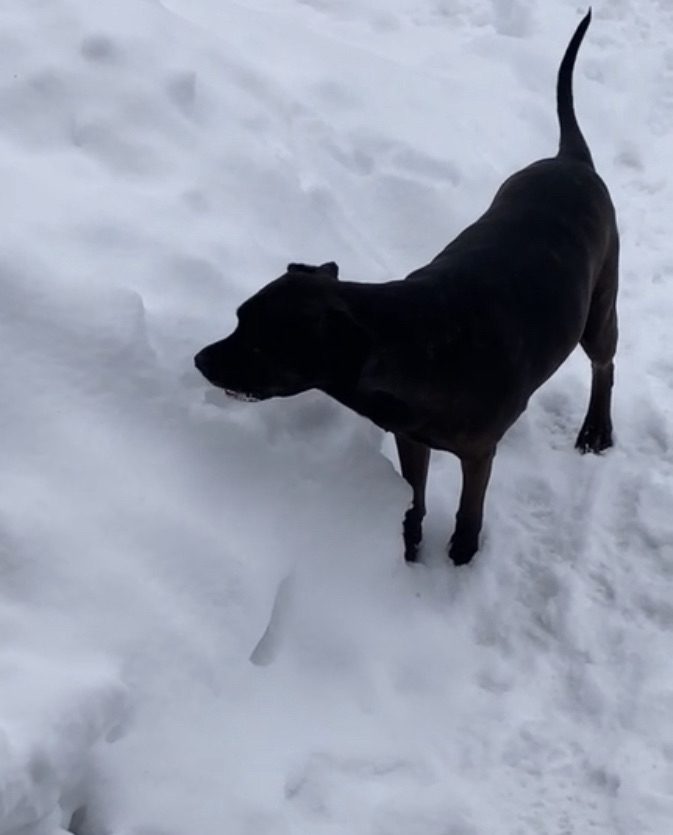

Ollie is my cat. He is a six month old orange tabby who loves to play and cuddle.
Cats are crepuscular, meaning they are most active around dusk and dawn. With Ollie, you can really tell because he's always bouncing off the walls by 10PM.

Lucile is my sister's cat. He is a one and a half year old brown tabby who seems aloof, but is actually such a sweet and funny cat.
One of Lucile's favourite hobbies is licking the edge of cardboard boxes.

Sophie, also affectionately called Soap, is my cat. She is a fifteen year old brown tabby who loves to sleep on the couch and cuddle.
I got Soap later in life after someone gave her to me, but she's been a lovely addition to the family ever since!

Charlie is the family dog. He is a nine year old chespeque labrador/mastiff mix. He's a very sweet and loveable dog who acts like my little shadow.
I love how intuitive dogs are and how they always seem ready for anything! When I wake up in the morning and put on my glasses, or take off my headphones after shutting off the computer, Charlie knows and gets excited.